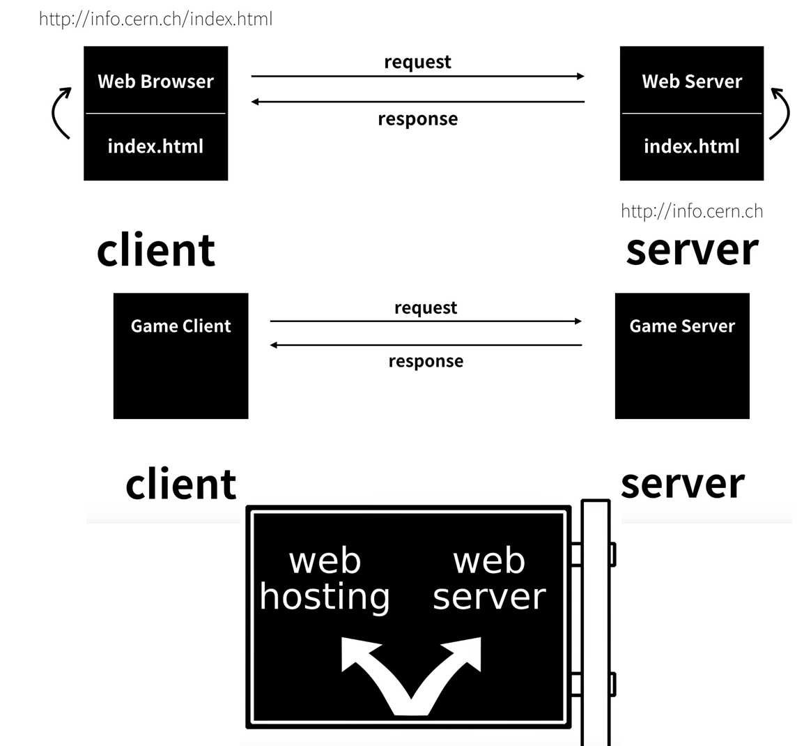
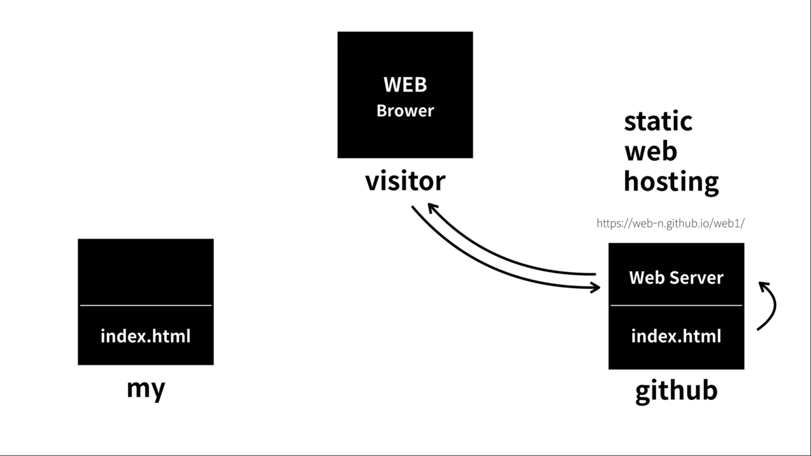

Web browsers receive HTML documents from a web server or from local storage and render them into multimedia web pages. HTML elements are the building blocks of HTML pages.
With HTML constructs, images and other objects, such as interactive forms, may be embedded into the rendered page. It provides a means to create structured documents by denoting structural semantics for text such as headings, paragraphs, lists, links, quotes and other items. HTML elements are delineated by tags, written using angle brackets.
HTML New Line Tag 중에 활용가능한건 br과 p가 있지만, 단락구분을 통해 정보정리를 위해선 p의 활용이 더 중요하다.
br은 닫는 태그 없이 작성이 가능하다. 그러나 P는 닫는 태그가 있어야 한다.
★단순히 글을 쓸 때도 Head의 코드로 작성된 키워드가 검색엔진에 노출된다. title이라는 코드도 중요하다. 안 쓰면 검색엔진에 노출되지 않기 떄문에 손해다.
목차를 만들기 위해서 부모 자식 간의 관계가 있는 Tag를 활용한다.
1.컨트롤키를 활용해서 동시에 커서에 입력이 가능하다.
2.탭키를 활용해서 들여쓰기가 가능하다.
3.목차는 영어로 List=li, li의 부모 태그가 Ul이다.
4.ol을 활용하면 숫자가 알아서 바뀌면서 숫자가 적혀진다.
즉, ol은 ordered list, ul은 unordered list
5.표를 만들 때에도 3대의 tag를 활용하면 쉽게 작성가능하다.
Internet과 WEB은 다른 개념이다. WEB이 Internet안에 포함되는 하위 개념이다.
예를들면 인터넷이 도시라면 웹은 빌딩하나일 뿐이다.
현재는 WEB Browser인 Client로서의 경험만 해봤기 때문에 어렵지만, WEB Server도 익숙해지면 되는 것이다.
어떤 걸 잘 안다는 건 잘 이해하고 있다는 것이 아니라 다만 익숙해졌을 뿐인 것이다.
WEB Server을 구축하는 건 2가지 방법이 있는데, 한 가지가 다른 사람의 서버를 활용하는 hosting 방식이고, 다른 한 가지가 직접 자신의 컴퓨터에 서버를 구축하는 것이다.

깃허브를 활용하게 되면 내가 작성한 Html을 가지고 다른 Client가 WEB을 통해 확인할 수 있게 가능하다.
본인이 직접 Server를 구축하면 좋지만, 개인이 하기에는 어려운 점이 많아 Hosting업체를 활용하는 것이 보통이다.
